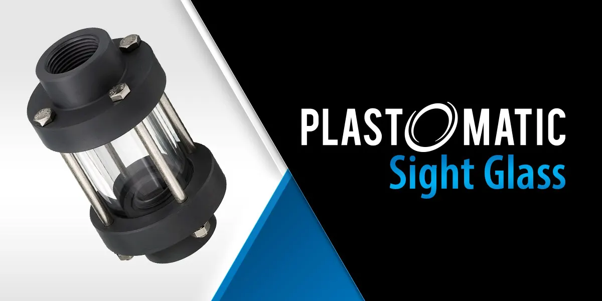

Plast-O-Matic installation tips for sight glasses
Orientation, thread sealing, and torque details that keep a sight glass from cracking on startup.

Plast-O-Matic sight glass products play a crucial role in monitoring fluid flow and levels in piping systems, offering clear visibility for effective management. While installing flow and level indicators may seem straightforward, there are key factors to ensure they function correctly. Flow indicators can be installed either vertically or horizontally, whereas level indicators must always be mounted vertically to maintain accurate readings.
Threaded sight glasses
The Series GX single-wall and Series GY double-wall flow indicators are easily threaded into a piping system but should only be connected to plastic fittings. Wrap male threads with PTFE tape or an appropriate pipe sealant, tighten by hand, then give an additional one-quarter turn with a strap wrench. Over-tightening can stretch or deform the plastic, leading to potential rupture. Avoid pipe wrenches, locking pliers, or vise grips, as they can stress the plastic. Never connect directly to metal pipes. Always use plastic nipples to prevent cutting into the plastic and causing a future rupture.
Flange installation
The Series GYW wafer design flow indicators fit between two smooth-faced companion flanges, which can be either metal or plastic. No flange gaskets are needed, as the flow indicators come with two O-rings for sealing. Ensure the flanges are properly aligned before tightening. Gradually tighten the flange bolts, alternating between opposite bolts, similar to tightening lug nuts. The final 1/16 in of tightening should be done with a torque wrench set to 10 to 15 foot-pounds to properly seal the O-rings without over-stressing the assembly. While these flow indicators do not have a specific inlet or outlet, if using streamers or fluttering devices, install them so that fluid flow directs the streamers into the viewing area.
Level indicators
Series GL level indicators are typically mounted vertically on the outside of a tank and come with female threads. As with the GX and GY models, wrap male threads with PTFE tape and tighten by hand, followed by an additional quarter turn using a strap wrench. If connecting to metal piping, always use plastic nipples between the fittings.
A useful tip is to connect the top and bottom of the level indicators with true-union ball valves. This allows easy removal of the indicators for cleaning or inspection while maintaining liquid levels in the tank. Although the Series GL is available in 1 or 2 ft lengths, it can be installed on taller tanks by staggering units to maintain a continuous visual indication and avoid dead spots. Avoid connecting them directly with pipe nipples, which creates dead spots and an unstable assembly.
A clear view on flow
When the liquid in the piping system is turbulent, flow is easy to see without fluttering devices. For clear or opaque liquids that are calm and lack air bubbles, it can be harder to detect flow. In such cases, a fluttering device inside the cylinder will help indicate liquid movement. Once installed correctly, Plast-O-Matic flow and level indicators operate automatically and require minimal maintenance.
As with all Plast-O-Matic products, sight glasses can be customized or fully redesigned to meet specific application needs. Ask a branch about options.
Questions about your line? A specialist answers the phone around the clock.
Back to articles